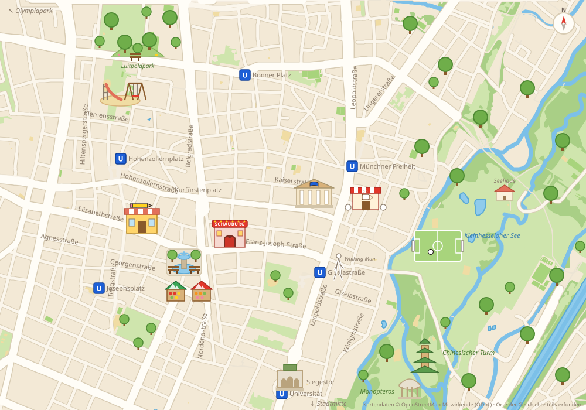
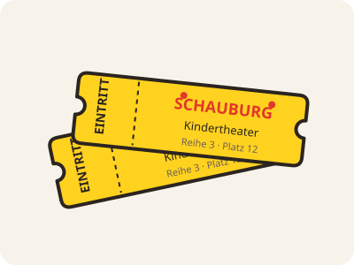

München-Mission
0 von 10 Aufgaben gelöst

Neu beginnen
📓
Schauburg · Vorstellung

Noch keine Hinweise. Löse die erste Aufgabe!
Alle gelösten Aufgaben und das Notizbuch werden gelöscht. Anna fängt wieder am Elisabethplatz an.